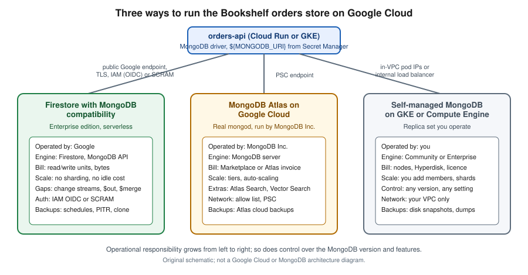

MongoDB on Google Cloud
|
This content was generated with the assistance of AI and should be verified against the official documentation before being relied on in production. |
Commands and behaviour on this page target the gcloud CLI 586 (release 586.0.0 of 2026-09-22) and Firestore with
MongoDB compatibility as documented on 2026-10-01; that product became generally available on 2025-08-26 as part of the
Firestore Enterprise edition and supports the MongoDB 3.6 through 8.0 API levels, with a different supported-feature
table for each level. Supported commands, limits, regions and prices change often, so re-verify them with
gcloud --version, the product overview
and its release notes before relying on a specific value. my-project-id, us-central1 and the example host names are
placeholders for your own values.
MongoDB is the document database this site documents in depth (see MongoDB Reference). Google Cloud
has no product named "MongoDB", so there are three ways to get one, and they differ more in who operates the engine
than in how you query it. Firestore with MongoDB compatibility is Google’s own serverless document database: it
speaks the MongoDB wire protocol, accepts the MongoDB drivers and tools, and is billed by read units, write units and
bytes stored, but it is Firestore underneath and not mongod. MongoDB Atlas on Google Cloud is MongoDB Inc.'s own
managed service, running the real server in a Google Cloud region, bought directly or through the Google Cloud
Marketplace. Self-managed MongoDB on Google Kubernetes Engine (GKE) or Compute Engine gives you the genuine server
and all of the operations work. In the Bookshelf scenario (described in the
section introduction) the orders-api keeps its data in a database called orders, and this page builds that store
each way.
The wider map of Google Cloud database options is on Managed Databases on Google Cloud. The relational alternatives are Cloud SQL and AlloyDB for PostgreSQL, and the other first-party document and key-value stores (native-mode Firestore, Spanner, Bigtable) are in Spanner, Firestore and Bigtable. For the counterparts on the other clouds, see DocumentDB and MongoDB on AWS and Cosmos DB and Azure DocumentDB.

Choosing between the options
| Aspect | Firestore with MongoDB compatibility | MongoDB Atlas on Google Cloud | Self-managed MongoDB on GKE or Compute Engine |
|---|---|---|---|
What it is |
Google-built serverless database exposing the MongoDB wire protocol on top of Firestore Enterprise edition. |
The real MongoDB server, operated by MongoDB Inc. in Google Cloud regions (and on other clouds). |
The real MongoDB server (Community or Enterprise) that you install, secure and run. |
Compatibility |
MongoDB 3.6 to 8.0 API levels with documented gaps (no change streams, no |
The full feature set of the chosen server version, including Atlas Search and Atlas Vector Search. |
The full feature set of the version you install. |
Operations |
Nothing to size, patch or shard; Google scales it. You manage indexes, users and backups. |
MongoDB Inc. patches, backs up and scales; cluster tiers and auto-scaling are configured in Atlas. |
You run replica sets, sharding, upgrades, backups and monitoring. |
Billing and procurement |
Normal Google Cloud bill: read and write units, storage in byte tranches, backups and egress. |
Atlas invoice, or a Marketplace subscription so charges appear on the Google Cloud bill and can draw down commitments. |
Nodes, disks and network on the Google Cloud bill, plus a MongoDB Enterprise licence if used. |
Network access |
Google-managed endpoint over TLS; IAM, VPC Service Controls and audit logging apply. |
Public endpoint with an IP access list, VPC peering, or Private Service Connect (PSC) private endpoints. |
Whatever you build in your VPC: pod IPs, internal load balancers, firewall rules. |
Choose it when |
You are on Google Cloud, your queries stay inside the supported subset, and you want serverless pricing and IAM. |
You need full compatibility, the newest server features, Atlas Search, vector search or multi-cloud. |
You need an unsupported version or setting, or must keep the engine under your own control. |
Behind the choice sits one question: does the application use any MongoDB feature that Firestore documents as unsupported? Run the compatibility checks in the next section against your real queries before committing, because migrating afterwards in either direction is a project.
such as change streams?} B -- Yes --> C{Want someone else to operate it?} C -- Yes --> D[MongoDB Atlas on Google Cloud
Marketplace billing, PSC] C -- No --> E[Self-managed on GKE or Compute Engine] B -- No --> F{Needs Atlas Search, vector search
or multi-cloud?} F -- Yes --> D F -- No --> G{Wants serverless billing and IAM?} G -- Yes --> H[Firestore with MongoDB compatibility] G -- No --> D
Firestore with MongoDB compatibility
Firestore with MongoDB compatibility is a database mode of the Enterprise edition of Firestore. A Google Cloud
project can hold several Firestore databases (up to 100, each identified by a database ID), and each database has an
edition and a data access mode, chosen at creation. Enterprise-edition databases can enable the MongoDB-compatible
data access mode, which gives the database a hostname ending in firestore.goog that MongoDB drivers and tools connect
to. The data model is the one you know from MongoDB: databases hold collections, collections hold documents with
fields, and fields hold strings, numbers or embedded objects and arrays. Where the Firestore Native mode is described
in Spanner, Firestore and Bigtable, this mode is meant for existing MongoDB code.
Properties worth knowing before building on it:
-
It is serverless: there are no nodes, shards or replica sets to size. Capacity scales with load and you pay for the work done.
-
The availability targets are 99.99% for a regional location and 99.999% for a multi-region location, per the product overview.
-
Access is controlled by Identity and Access Management (IAM), and the service participates in VPC Service Controls, Cloud Audit Logs and Cloud Monitoring.
-
The connection is always TLS, always in load-balanced mode, and without retryable writes (see below).
-
Backups, scheduled backups, point-in-time recovery (PITR) and database cloning are native Firestore features rather than MongoDB tools.
Official links for this section: Firestore with MongoDB compatibility overview.
Supported features and limits
Compatibility is documented per MongoDB version, so the exact answer for a given command is in the supported-feature tables. In summary, as read on 2026-10-01 for the 8.0 API level:
| Area | Status |
|---|---|
Queries |
Comparison, logical and array operators, text search with |
Aggregation |
Most stages and accumulators, including |
Updates |
The usual array and field operators ( |
Indexes |
Single-field, compound, multikey, text, 2dsphere, TTL, unique and sparse indexes. |
Transactions |
Sessions and multi-document transactions work; a transaction is limited to 270 seconds with a 60-second idle expiry. |
Administration |
User and role commands are not supported through the MongoDB API (users are managed with Google Cloud tooling); databases are created and deleted through the Google Cloud API rather than a MongoDB command. |
Other |
No GridFS and no map-reduce. |
The limits page lists the hard numbers: documents up to 16 MiB, field names and paths up to 1,500 bytes, nesting up to 20 levels, 100 databases per project, 1,000 indexes per database, 500 TTL configurations, a 128 MiB query memory limit and at most 40,000 index entries per document. Treat these as a snapshot and check the limits page. The missing change streams are the gap that most often rules this option out, because MongoDB-based event-driven designs (see Reacting to data changes) lean on them; on Google Cloud the alternative is to publish domain events to Pub/Sub (see Messaging and Integration) from the application.
Prerequisites for Bookshelf
export PROJECT_ID=$(gcloud config get-value project)
export REGION=us-central1
export DB_ID=orders
gcloud services enable firestore.googleapis.com secretmanager.googleapis.com \
cloudkms.googleapis.com --project="$PROJECT_ID"The Firestore API provides the databases and the MongoDB endpoint; the other two services are used later in this page
for credentials and field-level encryption. Creating a database requires an IAM role that includes the
datastore.databases.create permission, such as Cloud Datastore Owner (roles/datastore.owner), as listed in
Create and manage databases.
See Enabling and disabling services.
Creating the database
Database IDs use lowercase letters, digits and hyphens, run from 4 to 63 characters, start with a letter and must not
look like a UUID. The ID cannot be changed afterwards, and the location is permanent too; pick it for latency to
orders-api (a regional location such as us-central1, or a multi-region such as nam5).
In the Google Cloud console
-
Select the project in the project picker and open Firestore > Databases (enable the API when prompted; Cloud Shell already has the gcloud CLI if you prefer it).
-
Click Create a Firestore Database.
-
Enter the database ID (
orders) and select Enterprise Edition. -
Choose Firestore with MongoDB compatibility as the data access mode.
-
Select the location and click Create Database.
-
When it is ready, open the database and copy the connection string from the section for connecting with an external MongoDB tool.
With the gcloud CLI
gcloud firestore databases create \
--database="$DB_ID" \
--location="$REGION" \
--edition=enterprise \
--enable-mongodb-compatible-data-access \
--delete-protection \
--project="$PROJECT_ID"
gcloud firestore databases describe --database="$DB_ID" \
--format="value(uid,locationId,databaseEdition)"The describe output includes the database uid, which is the first label of the host name. The host name has the form
UID.LOCATION.firestore.goog, and the connection string also appears in the console. --delete-protection prevents
accidental deletion until you update the database with --no-delete-protection.
See gcloud firestore databases create.
Terraform
resource "google_firestore_database" "orders" {
name = "orders"
location_id = "us-central1"
type = "FIRESTORE_NATIVE"
database_edition = "ENTERPRISE"
delete_protection_state = "DELETE_PROTECTION_ENABLED"
}The attribute that switches on the MongoDB-compatible data access mode has been added to the provider separately from
the base resource; check the current hashicorp/google documentation for the exact argument name before applying.
See google_firestore_database
and Infrastructure as Code.
Authentication and permissions
The MongoDB endpoint accepts three kinds of credential.
| Mechanism | Used by | Notes |
|---|---|---|
|
Workloads on Google Cloud (Cloud Run, GKE, Compute Engine) and developers using Application Default Credentials |
Recommended. The driver obtains an OpenID Connect token for the attached service account; no password exists to leak. |
|
Tools and applications that only support username and password |
A database user is created for the database and given an IAM role; the generated password is shown once. |
|
Short-lived scripts |
A Google access token is sent as the password against the |
IAM grants access. A service account that only reads and writes documents needs a Datastore role such as Cloud
Datastore User (roles/datastore.user); a read-only analyst can use Cloud Datastore Viewer
(roles/datastore.viewer); administration needs Cloud Datastore Owner or a custom role. Bind roles to the smallest
scope that works, ideally with an IAM condition limited to one database.
gcloud iam service-accounts create orders-api-sa \
--display-name="Bookshelf orders-api" --project="$PROJECT_ID"
gcloud projects add-iam-policy-binding "$PROJECT_ID" \
--member="serviceAccount:orders-api-sa@${PROJECT_ID}.iam.gserviceaccount.com" \
--role="roles/datastore.user" \
--condition="expression=resource.name == 'projects/${PROJECT_ID}/databases/orders',title=orders-db-only"Attach orders-api-sa to the Cloud Run service or to the GKE workload (through Workload Identity Federation for GKE)
and the driver picks it up through Application Default Credentials; never download a service-account key for this.
Locally, use gcloud auth application-default login or impersonate the service account. See
IAM Conditions overview and
Identity and Access.
For SCRAM, create the user from the console (open the database, choose Security, click Add User, pick a role, and
copy the generated password immediately) or, if you script it, with the gcloud firestore user-creds command group.
Store the generated password in Secret Manager (see Secret Manager and Cloud KMS) and have the
application read it from there:
gcloud firestore user-creds create orders-app --database="$DB_ID" --project="$PROJECT_ID"
# Copy the one-time password from the output into Secret Manager without echoing it:
printf '%s' "$GENERATED_SECRET" | gcloud secrets create orders-db-password \
--data-file=- --replication-policy=automatic --project="$PROJECT_ID"Run gcloud firestore user-creds --help to confirm the exact subcommands in your gcloud version, because this group
is newer than the rest of the Firestore commands.
See gcloud firestore user-creds.
Connecting with mongosh
The three driver requirements are the same everywhere: connect in load-balanced mode, with TLS, and with retryable writes disabled. The connection string template, with the host copied from the console, is:
mongodb://UID.LOCATION.firestore.goog:443/orders?loadBalanced=true&tls=true&retryWrites=falseWith SCRAM (from a shell where DB_USER, DB_PASSWORD and DB_HOST hold your values; fetch the password from Secret
Manager rather than typing it):
DB_PASSWORD=$(gcloud secrets versions access latest --secret=orders-db-password)
DB_HOST="UID.LOCATION.firestore.goog" # copy from the console
mongosh "mongodb://${DB_USER}:${DB_PASSWORD}@${DB_HOST}:443/orders?loadBalanced=true&authMechanism=SCRAM-SHA-256&tls=true&retryWrites=false"With OIDC from a Cloud Shell, Compute Engine VM or GKE pod whose identity has the role above:
mongosh "mongodb://${DB_HOST}:443/orders?loadBalanced=true&tls=true&retryWrites=false&authMechanism=MONGODB-OIDC&authMechanismProperties=ENVIRONMENT:gcp,TOKEN_RESOURCE:FIRESTORE"Then try the data model from Documents, BSON & data types with db.orders.insertOne(…).
Installing mongosh is covered in What MongoDB is & how to run it. See
Quickstart: connect with mongosh
and Connect to a database.
Backups, PITR and cloning
Backup features are Firestore’s, driven by gcloud firestore rather than mongodump. Scheduled backups run daily or
weekly and are kept for a retention period of up to 14 weeks. Point-in-time recovery keeps a rolling window of
versions so that you can read, or clone, the database as it was at a past timestamp.
gcloud firestore backups schedules create \
--database="$DB_ID" --recurrence=daily --retention=7d --project="$PROJECT_ID"
gcloud firestore backups list --format="table(name,database,state)"
# Restore a backup into a NEW database; restores never overwrite in place.
gcloud firestore databases restore \
--source-backup="projects/${PROJECT_ID}/locations/${REGION}/backups/BACKUP_ID" \
--destination-database=orders-restored
# Clone from a PITR timestamp (PITR must be enabled on the source).
gcloud firestore databases clone \
--source-database="projects/${PROJECT_ID}/databases/${DB_ID}" \
--snapshot-time="2026-10-01T10:20:00.00Z" \
--destination-database=orders-cloneBoth operations create a new database, so you point the application at it (or swap names) after validating the data.
Enable PITR with the --enable-pitr option of gcloud firestore databases create or update.
See Backups and restore and
gcloud firestore databases clone.
Application code: Spring Data MongoDB
Spring Boot 4 and 3 applications use the standard Spring Data MongoDB starter (see
Spring Data MongoDB). The Firestore-specific parts are the connection URI (load
balanced, TLS, no retryable writes) and, for OIDC, the credential. Pass the URI as an environment variable so the
secret never lands in application.yml:
# src/main/resources/application.yml
spring:
data:
mongodb:
uri: ${MONGODB_URI}
database: ordersOn Cloud Run, inject it from Secret Manager (see Runtime Configuration):
gcloud run services update orders-api --region="$REGION" \
--set-secrets=MONGODB_URI=orders-mongodb-uri:latestwhere the secret orders-mongodb-uri holds the full SCRAM connection string built from the DB_USER, DB_PASSWORD
and DB_HOST values. For OIDC no password exists, so only the host is configured and the driver needs a credential that
calls Application Default Credentials. The dependency for that is com.google.auth:google-auth-library-oauth2-http,
managed by the Google Cloud libraries-bom:
package com.example.bookshelf.orders;
import com.google.auth.oauth2.GoogleCredentials;
import com.mongodb.ConnectionString;
import com.mongodb.MongoClientSettings;
import com.mongodb.MongoCredential;
import com.mongodb.connection.ClusterConnectionMode;
import java.io.IOException;
import org.springframework.context.annotation.Bean;
import org.springframework.context.annotation.Configuration;
@Configuration
class FirestoreMongoConfig {
@Bean
MongoClientSettings mongoClientSettings(
@org.springframework.beans.factory.annotation.Value("${firestore.mongodb.host}") String host)
throws IOException {
GoogleCredentials adc = GoogleCredentials.getApplicationDefault()
.createScoped("https://www.googleapis.com/auth/cloud-platform");
MongoCredential.OidcCallback callback = context -> {
try {
adc.refreshIfExpired();
} catch (IOException e) {
throw new IllegalStateException("Cannot refresh Google credentials", e);
}
return new MongoCredential.OidcCallbackResult(adc.getAccessToken().getTokenValue());
};
return MongoClientSettings.builder()
.applyConnectionString(new ConnectionString("mongodb://" + host + ":443/orders"))
.credential(MongoCredential.createOidcCredential(null)
.withMechanismProperty(MongoCredential.OIDC_CALLBACK_KEY, callback))
.applyToClusterSettings(b -> b.mode(ClusterConnectionMode.LOAD_BALANCED))
.applyToSslSettings(b -> b.enabled(true))
.retryWrites(false)
.build();
}
}The mapped @Document("orders") record and its MongoRepository are ordinary Spring Data code, as in the linked page.
Because the driver cannot retry a write, the application must handle transient failures itself: wrap idempotent
operations (upserts keyed by orderId) in Spring Framework 7’s @Retryable or Resilience4j rather than relying on the driver (see
Retry). See
Connect to a database,
Spring Data MongoDB reference and
Configuration and Profiles.
Networking and security
The endpoint is a Google-managed address reached over TLS, so traffic from Cloud Run, GKE or Compute Engine in the same or another region stays on Google’s network. To keep the call off the public internet, use Private Google Access on the subnet (and Direct VPC egress or a Serverless VPC Access connector for Cloud Run), and to prevent exfiltration put the project inside a VPC Service Controls perimeter that restricts the Firestore API (see Governance, Security and Compliance). Data is encrypted at rest with Google-managed keys by default; customer-managed encryption keys (CMEK) from Cloud KMS can be chosen when a database is created or cloned. Admin Activity and Data Access audit logs record who read or changed what. The application-level encryption of single fields is covered in the CSFLE section below. See the overview and VPC Service Controls overview.
MongoDB Atlas on Google Cloud
MongoDB Atlas is MongoDB Inc.'s managed service. A cluster runs real mongod processes (a replica set across three
zones, or a sharded cluster) in the Google Cloud region you choose, so you get the full server, the Atlas data tools,
Atlas Search and Atlas Vector Search (see MongoDB Atlas Search and
Text, wildcard, geospatial & Atlas search). Atlas has its own organizations, projects, users and API
keys; Google Cloud IAM does not control the database. What the Marketplace changes is billing, not the product.
Subscribing through the Google Cloud Marketplace
Subscribing through the Marketplace is pay-as-you-go: Atlas usage is metered and appears on your Google Cloud invoice, and it draws down any Google Cloud spend commitment you hold, according to the Marketplace terms. You can also use Atlas without the Marketplace and pay MongoDB Inc. directly.
-
In the Google Cloud console, open Marketplace and search for MongoDB Atlas. Select the pay-as-you-go listing (check the listing, because there are also private-offer and annual listings).
-
Click Subscribe, accept the terms (this needs the Billing Account Administrator role or a permission that includes
consumerprocurement.orders.place), and click Sign up with MongoDB. -
You are redirected to Atlas, where you sign in or register and link the Atlas organization to the Marketplace subscription. The link is per Atlas organization.
-
In Atlas, create a project for Bookshelf and continue below.
Creating a cluster
In the Atlas UI choose Create under the project, pick Google Cloud as the provider, a region close to orders-api
(for example us-central1, which Atlas names CENTRAL_US), a tier (the shared and free tiers suit development;
dedicated tiers such as M10 and up suit production) and a name. The Atlas CLI does the same from a terminal:
atlas auth login
atlas projects create bookshelf
atlas clusters create orders \
--projectId "$ATLAS_PROJECT_ID" \
--provider GCP --region CENTRAL_US --tier M10 --members 3 \
--mdbVersion 8.0 --backup
atlas clusters watch orders --projectId "$ATLAS_PROJECT_ID"ATLAS_PROJECT_ID is the Atlas project’s ID, which you copy from the Atlas UI; --backup turns on cloud backups.
Create a database user in Atlas with the least privilege the service needs (for example readWrite on orders), and
store its password in Google Cloud Secret Manager, not in the repository:
printf '%s' "$ATLAS_DB_PASSWORD" | gcloud secrets create atlas-orders-password \
--data-file=- --replication-policy=automatic --project="$PROJECT_ID"The application then builds its connection string from the mongodb+srv host that Atlas shows for the cluster,
orders-db-user (the user you created) and the password read from the secret, and uses Spring Data MongoDB exactly
as in Spring Data MongoDB; the driver can retry writes against Atlas, so the
Firestore-specific URI flags do not apply. See
Atlas CLI documentation and
Create a cluster.
Connecting privately with Private Service Connect
By default an Atlas cluster is reached over the internet through an IP access list. For production use a private path. Atlas on Google Cloud offers VPC peering and Private Service Connect (PSC): Atlas publishes service attachments in its own producer network, and you create forwarding rules in your VPC that target them, so traffic never leaves Google’s network and no IP range overlaps with your VPC. PSC is the better fit when the consumer is Cloud Run or a VPC you cannot peer.
# 1. In Atlas: Network Access > Private Endpoint > Add Private Endpoint (Google Cloud, region).
# Atlas returns the service attachment names and a script or the exact forwarding-rule parameters.
# 2. In your VPC, reserve an internal address and point a forwarding rule at the service attachment:
gcloud compute addresses create atlas-psc-0 \
--region="$REGION" --subnet=bookshelf-subnet --project="$PROJECT_ID"
gcloud compute forwarding-rules create atlas-psc-0 \
--region="$REGION" --network=bookshelf-vpc --address=atlas-psc-0 \
--target-service-attachment="$ATLAS_SERVICE_ATTACHMENT_URI" \
--project="$PROJECT_ID"
# 3. Back in Atlas, submit the project ID, endpoint group name and the forwarding-rule IP addresses.How many forwarding rules Atlas needs depends on its current PSC architecture for the region, so follow the exact
steps and script shown in Atlas rather than copying this single rule. Once the endpoint is available, Atlas gives a
private connection string (a -pri host name); use it from orders-api. See
Private Service Connect and
Atlas private endpoints, and
VPC Networking on Google Cloud.
Atlas Vector Search and operations
Atlas Vector Search stores embeddings next to documents and queries them with the $vectorSearch aggregation stage,
which Firestore’s MongoDB compatibility does not provide (its vector search is the Firestore KNN feature, covered in
Spanner, Firestore and Bigtable). Compare the options in
Comparing Vector Databases. Backups, scaling, monitoring and upgrades are managed in
Atlas; see Running & observing a deployment for what to watch. Atlas bills by cluster tier,
storage, backup and data transfer; with the Marketplace those charges are consolidated into the Google Cloud bill, and
cross-region data transfer is still charged. See
Atlas Vector Search overview.
Self-managed MongoDB on GKE and Compute Engine
Running mongod yourself is justified when you need a server version or setting no managed service offers, when
regulation requires the database to run in your own cluster or project boundary, when you must run MongoDB Enterprise
features under your own licence, or when you want to keep the engine portable between clouds. It costs you everything
the managed options hide: replica-set operation, upgrades, backups, monitoring, disk growth and failure drills. For a
small team the honest default is one of the managed options above.
On GKE with a StatefulSet
MongoDB is a stateful workload, so each replica set member is a pod with its own persistent volume (see Kubernetes for StatefulSets and persistent volumes). On GKE the volumes are Compute Engine disks; Hyperdisk Balanced is the current general-purpose choice (see Block and File Storage on Google Cloud). Create a cluster as in GKE Clusters (a Standard cluster, or Autopilot where the chosen disk type is supported), then:
apiVersion: storage.k8s.io/v1
kind: StorageClass
metadata:
name: hyperdisk-balanced-retain
provisioner: pd.csi.storage.gke.io
parameters:
type: hyperdisk-balanced
reclaimPolicy: Retain
volumeBindingMode: WaitForFirstConsumer
allowVolumeExpansion: trueapiVersion: v1
kind: Service
metadata:
name: mongo
namespace: orders
spec:
clusterIP: None
selector:
app: mongo
ports:
- port: 27017
---
apiVersion: apps/v1
kind: StatefulSet
metadata:
name: mongo
namespace: orders
spec:
serviceName: mongo
replicas: 3
selector:
matchLabels:
app: mongo
template:
metadata:
labels:
app: mongo
spec:
containers:
- name: mongod
image: mongo:8.0
args: ["--replSet", "rs0", "--bind_ip_all", "--keyFile", "/etc/mongo-keyfile/keyfile"]
ports:
- containerPort: 27017
env:
- name: MONGO_INITDB_ROOT_USERNAME
value: admin
- name: MONGO_INITDB_ROOT_PASSWORD
valueFrom:
secretKeyRef:
name: mongo-credentials
key: password
volumeMounts:
- name: data
mountPath: /data/db
- name: keyfile
mountPath: /etc/mongo-keyfile
readOnly: true
resources:
requests:
cpu: "1"
memory: 4Gi
volumes:
- name: keyfile
secret:
secretName: mongo-keyfile
defaultMode: 0400
volumeClaimTemplates:
- metadata:
name: data
spec:
accessModes: ["ReadWriteOnce"]
storageClassName: hyperdisk-balanced-retain
resources:
requests:
storage: 100GiThe mongo-credentials and mongo-keyfile Secrets are created from values stored in Secret Manager (the Secret Manager
add-on for GKE, or the External Secrets Operator, can sync them; see Secret Manager and Cloud KMS).
Never write them into the manifest. After the three pods are running, initiate the replica set once:
kubectl -n orders exec mongo-0 -- mongosh --username admin --password "${DB_PASSWORD}" \
--authenticationDatabase admin --eval '
rs.initiate({ _id: "rs0", members: [
{ _id: 0, host: "mongo-0.mongo.orders.svc.cluster.local:27017" },
{ _id: 1, host: "mongo-1.mongo.orders.svc.cluster.local:27017" },
{ _id: 2, host: "mongo-2.mongo.orders.svc.cluster.local:27017" } ] })'Spread the pods across zones with topology spread constraints or pod anti-affinity so a zone failure leaves a majority,
use a PodDisruptionBudget, and keep the cluster private so only orders-api pods can reach the headless Service
(a Kubernetes NetworkPolicy). A MongoDB operator reduces the manual steps; MongoDB offers Kubernetes operators for
Community and Enterprise deployments, and their packaging has changed over time, so check which one is current in the
MongoDB Kubernetes documentation before choosing. For the engine side
see Replica sets & high availability, Horizontal scaling with sharded clusters and
WiredTiger, journaling & durability. See
Persistent volumes on GKE and
Using Hyperdisk with GKE.
On Compute Engine
On Compute Engine run three VMs in three zones (see Compute Engine) with Hyperdisk Balanced data disks, install MongoDB from the official packages, and configure the replica set as in Replica sets & high availability and Authentication, authorization & encryption. Keep the VMs private, reach them through IAP TCP forwarding, and snapshot the disks on a schedule.
Field-level encryption with Cloud KMS
Server-side encryption protects disks; client-side field level encryption (CSFLE) protects chosen fields from the database operator as well. The driver encrypts the field with a data encryption key (DEK) stored in a key vault collection, and the DEK is wrapped by a customer master key (CMK) that stays in a KMS. Google Cloud KMS is a supported KMS provider. The mechanism and the driver API are explained in Authentication, authorization & encryption; this section only covers the Google Cloud half. It works with Atlas and self-managed MongoDB. For Firestore with MongoDB compatibility, verify the current supported-feature tables first: explicit encryption (the driver encrypts and decrypts the values you pass) needs only ordinary reads and writes, but automatic encryption has additional server-side requirements.
gcloud kms keyrings create bookshelf-ring --location="$REGION" --project="$PROJECT_ID"
gcloud kms keys create orders-csfle-cmk \
--keyring=bookshelf-ring --location="$REGION" \
--purpose=encryption --rotation-period=90d \
--next-rotation-time=$(date -u -d '+90 days' +%Y-%m-%dT%H:%M:%SZ) \
--project="$PROJECT_ID"
gcloud kms keys add-iam-policy-binding orders-csfle-cmk \
--keyring=bookshelf-ring --location="$REGION" \
--member="serviceAccount:orders-api-sa@${PROJECT_ID}.iam.gserviceaccount.com" \
--role="roles/cloudkms.cryptoKeyEncrypterDecrypter" --project="$PROJECT_ID"The --next-rotation-time expression uses GNU date; on macOS compute the timestamp with date -u -v+90d instead.
In the driver, the gcp KMS provider is configured with the key’s resource name
(projects/my-project-id/locations/us-central1/keyRings/bookshelf-ring/cryptoKeys/orders-csfle-cmk). On Google Cloud
workloads the MongoDB drivers can obtain the GCP credential automatically from the attached service account, so you do
not pass a private key in the application settings; check your driver version’s documentation for how it enables
automatic credentials, and never export a service-account key to satisfy a tutorial. Key rotation creates new key
versions; old versions stay available to unwrap existing DEKs until you schedule them for destruction, which is delayed
and reversible during the scheduled period. See Create
keys and MongoDB CSFLE documentation, and
Secret Manager and Cloud KMS.
Migrating to and between the options
| Path | Notes |
|---|---|
|
Works to and from Atlas and self-managed MongoDB. For Firestore with MongoDB compatibility it can load collections over the wire protocol, but restore with indexes created afterwards, in batches under the transaction and size limits, and without user or role documents. See Backups, import/export & GridFS. |
Datastream |
Datastream is Google Cloud’s change data capture service; per the current documentation it can read a MongoDB source
and write to BigQuery or Cloud Storage, which suits analytics replicas of an |
Database Migration Service |
Covers relational engines. It has no MongoDB to Firestore path. |
Run the dump and restore from a Compute Engine VM or Cloud Shell in the same region as the target, with credentials read from Secret Manager:
mongodump --uri="${SOURCE_URI}" --db=orders --out=./dump
mongorestore --uri="${TARGET_URI}" --nsExclude='orders.system.*' ./dumpHere SOURCE_URI and TARGET_URI are connection strings held in environment variables that you populated from Secret
Manager; do not put them on the command line literally. See
Datastream overview and
Database Migration Service.
The Bookshelf orders variant
The orders-api needs a document store for orders, order lines and a status history. The documents are
self-contained (an order embeds its lines), which is the shape MongoDB models well (see
Schema design for the document model), and reads are almost always by order ID or customer ID.
MongoDB compatibility)] O -- publishes order event --> P[[Pub/Sub topic orders]] P --> N[notifier] O -. alternative .-> A[(MongoDB Atlas via PSC)] S[Secret Manager] -. credentials .-> O
The recommended default is Firestore with MongoDB compatibility because orders-api uses only CRUD, indexes, simple
aggregations and transactions, it has bursty traffic, and the team does not want to run a database. Because the
database has no change streams, the service publishes an OrderCreated message to the Pub/Sub topic orders after
the write succeeds (an outbox collection makes that atomic), and notifier reacts to the topic as in
Cloud Run Functions and Events. Switch to Atlas if you later need Atlas Search for order
lookup, vector search for recommendations, or change streams.
Deploying orders-api against the Firestore database:
gcloud run deploy orders-api \
--image="${REGION}-docker.pkg.dev/${PROJECT_ID}/bookshelf/orders-api:latest" \
--region="$REGION" \
--service-account="orders-api-sa@${PROJECT_ID}.iam.gserviceaccount.com" \
--set-env-vars="FIRESTORE_MONGODB_HOST=${DB_HOST}" \
--no-allow-unauthenticatedSee gcloud run deploy and
Cloud Run. The catalog data stays relational on Cloud SQL
(Cloud SQL); the cache is Memorystore (Memorystore and Partner Databases).
Pricing model
Pricing is described in prose here because rates change by region and over time; always read the dated Firestore Enterprise pricing page and use the pricing calculator.
-
Firestore with MongoDB compatibility bills by the work done: read units and write units (deletes count as writes), stored data in byte tranches (the per-byte rate falls as total stored data crosses tranche boundaries), backup and PITR storage separately, and network egress out of Google Cloud. There is no cost for idle compute because there is no provisioned capacity. The limits page lists a free tier of 1 GiB of stored data, daily read and write unit allowances and monthly egress, applying to one MongoDB-compatible database per project; verify the current figures before relying on them. Backups, restores and TTL deletion need billing enabled.
-
MongoDB Atlas bills by cluster tier, storage, backup and data transfer. A Marketplace subscription moves the invoice to Google Cloud and can count towards commitments; a paid private offer may set different terms.
-
Self-managed bills for the nodes (vCPU and memory), Hyperdisk capacity and provisioned performance, snapshots, inter-zone network traffic and, with MongoDB Enterprise, a licence. A three-member replica set pays for three of everything all the time.
See Cost Management and Billing for budgets and alerts.
Limits and recent changes
-
2025-08-26: Firestore with MongoDB compatibility became generally available in the Enterprise edition.
-
Older guides recommend downloading a service-account key and putting it in an application; the current approach is OIDC with Application Default Credentials and an attached service account.
-
Older guides show MongoDB on a single VM or with
mongodinstalled by hand; the current self-managed approach on Google Cloud is a StatefulSet on GKE or a replica set across zones, with Hyperdisk rather than legacy disk types.
Troubleshooting
| Symptom | Check |
|---|---|
|
The URI must contain |
|
The password is shown once. Create a new user credential or reset it, store it in Secret Manager, and check the user has an IAM role on the database. |
OIDC |
The attached service account lacks a Datastore role on the database, or the IAM condition names another database. |
A command or aggregation stage fails as unsupported |
Compare it with the supported-feature table for your API level; rework to a supported stage or move the workload to Atlas. |
Atlas connection refused through PSC |
The endpoint is not |
Replica set has no primary |
A majority of members is not reachable: check DNS names in |
Clean up
Delete in dependency order. Deleting the Firestore database also deletes its data and PITR history, so export or clone first if you need it.
# Firestore with MongoDB compatibility
gcloud firestore databases update --database=orders --no-delete-protection
gcloud firestore backups schedules list --database=orders --format="value(name)"
gcloud firestore backups schedules delete --database=orders --backup-schedule=SCHEDULE_ID
gcloud firestore databases delete --database=orders
gcloud firestore databases delete --database=orders-restored
gcloud firestore databases delete --database=orders-clone
# Credentials and identities
gcloud secrets delete orders-db-password
gcloud secrets delete orders-mongodb-uri
gcloud secrets delete atlas-orders-password
gcloud projects remove-iam-policy-binding "$PROJECT_ID" \
--member="serviceAccount:orders-api-sa@${PROJECT_ID}.iam.gserviceaccount.com" \
--role="roles/datastore.user"
gcloud iam service-accounts delete "orders-api-sa@${PROJECT_ID}.iam.gserviceaccount.com"
# Atlas private endpoint on the Google Cloud side
gcloud compute forwarding-rules delete atlas-psc-0 --region="$REGION"
gcloud compute addresses delete atlas-psc-0 --region="$REGION"
# Self-managed on GKE: PVCs are retained on purpose; delete them and then the disks
kubectl -n orders delete statefulset mongo
kubectl -n orders delete pvc -l app=mongo
kubectl delete namespace ordersAlso terminate the Atlas cluster in Atlas (atlas clusters delete orders) and delete the Atlas private endpoint, since
Atlas bills until the cluster is gone and deletion cannot be undone. With a Retain reclaim policy the persistent volumes
and their Hyperdisks outlive the claims: find them with kubectl get pv and gcloud compute disks list, and delete the
disks you no longer want. Secret Manager deletes all versions with the secret. KMS key versions are not deleted
immediately: schedule each version for destruction with gcloud kms keys versions destroy, which has a delay before
the material is gone, and you cannot delete the key or key ring themselves. For a throwaway project, deleting the
project (gcloud projects delete my-project-id) removes everything after the 30-day recovery period. See
Create and manage databases,
Destroy and restore key versions and
Shutting down projects.